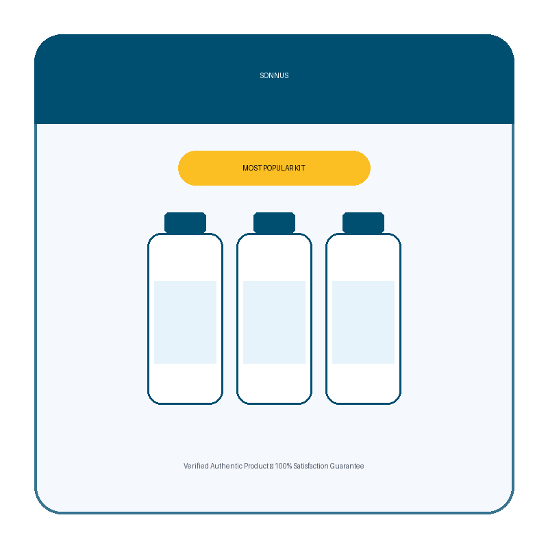

What Is Sonnus And How Does It Work?
Most sleep formulas take the blunt route: flood the body with melatonin and call it a solution. Sonnus was engineered around a different question entirely.
Your brain doesn't fall asleep on command — it builds toward sleep. Scientists call this build-up sleep pressure, and it climbs steadily with every waking hour until it crosses a threshold and tips you into deep, uninterrupted rest. In your twenties, that internal clockwork hums along without effort. By the time you hit fifty, the mechanism is often running on empty.
There are reasons for that decline. Ongoing stress leaves the nervous system stuck in high alert. Screens and late-night scrolling signal to the brain that daytime never actually ended. Years of leaning on high-dose melatonin can blunt the very receptors meant to respond to it. The internal battery that used to recharge overnight starts draining faster than it fills — and a pill built purely to sedate you does nothing to restore that battery.
Sonnus was built to close that exact gap. Rather than forcing unconsciousness, it works across four coordinated fronts the manufacturer calls the 4-Step Reset. First, it restocks the raw materials your brain needs to generate its own sleep signals. Second, it calms the mental chatter that keeps you staring at the ceiling. Third, it releases the physical tension stored in muscles and nerves. Fourth, it delivers a measured bedtime cue — not an overwhelming dose, but a gentle nudge that tells your body it's time to power down.
The delivery method is part of the design. These are wild-berry gummies, not capsules — two chewed thirty minutes before bed, no water, no complicated ritual, no bitter aftertaste to dread each night.
The manufacturer is upfront about what this is and isn't: not a knockout pill, but a gradual biological reset. Because the underlying system needs time to come back online, results tend to build across days and weeks — which is exactly why the 90-day guarantee is structured the way it is.
Sonnus Ingredients
Ten ingredients, fully disclosed doses, no proprietary-blend label hiding what's actually inside. Each compound plays a defined role in the 4-Step Reset.
- Magnesium Bisglycinate (The Sleep-Pressure Primer): Fuels the pathway that turns tryptophan into serotonin and then into melatonin — the raw material your brain draws on to build sleep pressure at its own pace. Everything else in the formula builds on this foundation.
- L-Theanine (The Racing-Mind Quietener): Encourages calm, alpha-wave brain activity without the heavy, sedated feeling other calming agents bring. The mental loop at lights-out settles instead of spiraling.
- Magnesium Glycinate (The Body-Release Mineral): A highly absorbable form of magnesium aimed at nervous-system and muscle relaxation — the shift from tense-and-wired to loose-and-ready for sleep.
- 5-HTP (The Serotonin Bridge): Supports the body's own serotonin output, the direct precursor to nighttime melatonin — the bridge that carries daytime calm into nighttime rest.
- Vitamin B6 (The Nighttime Converter): The bioactive cofactor that helps convert 5-HTP into serotonin and supports melatonin metabolism. Without it, the raw materials upstream go largely unused.
- Precision Melatonin (0.9 mg — The Night Signal): Not the typical 5–12 mg megadose that leaves you groggy at sunrise. A precisely calibrated 0.9 mg is enough to cue bedtime without becoming the entire solution — a whisper, not a sledgehammer.
- GABA (The Natural Brake Pedal): The brain's principal calming neurotransmitter. If alertness is the accelerator, GABA is the brake — supporting the shift out of alert mode so sleep can actually begin.
- Apigenin (The Calm Signal): A chamomile-derived compound that supports GABA-related calming pathways — a traditional bedtime botanical, modernized and dosed with intent.
- Vitamin B2 (The Circadian Cofactor): Supports cellular energy production and helps maintain a healthy circadian rhythm — a steadier, more predictable internal clock.
- Lemon Balm (The Tension Releaser): Works in tandem with magnesium glycinate to ease the physical tension and 3 a.m. stress response that keep you wired even when your body is running on empty.
Read together, the sequence is deliberate: prime the fuel, quiet the noise, release the tension, then signal bedtime. Each ingredient sets up the next.
Sonnus Side Effects
Nothing in this formula is foreign to your body. Every listed compound is one your own biology already produces, converts, or has likely encountered before: two forms of magnesium, an amino acid your gut naturally turns into serotonin, two B vitamins, a neurotransmitter your brain manufactures daily, a chamomile extract, a lemon balm extract, and a trace amount of melatonin — smaller than what most drugstore tablets contain on their own.
There are no stimulants and no caffeine in the mix. No gluten, no added sugar, no artificial fillers or dyes. The formula is also non-habit-forming, which matters given the entire premise is rebuilding the brain's own sleep system rather than substituting for it.
Manufacturing standards support that profile. Sonnus is produced in the USA inside an FDA-registered facility, with every batch third-party tested for purity before it ships.
Across customer feedback, there's no widespread pattern of adverse reactions reported. The gummy format also sidesteps the digestive discomfort some people experience swallowing large capsules on an empty stomach right before bed.
As with any dietary supplement, anyone managing an existing medical condition or taking prescription medication — particularly a sleep aid, sedative, antidepressant, or additional melatonin — should check with a healthcare professional before starting.
Sonnus Dosage
Two gummies, thirty minutes before bed. That's the entire routine.
The wild berry flavor makes it the easiest part of the night by design — a reset only works if you can actually stick with it, and adherence tends to collapse the moment a routine starts to feel like a chore. No capsules to swallow, no powder to stir, no bitter tea to steep while you're already half-asleep.
Consistency is what this formula rewards. Sleep pressure rebuilds on its own biological schedule, not on demand, so skipping days doesn't just slow the results proportionally — it mostly stalls them. Expect a quieter mind at lights-out within the first few nights, the 3 a.m. wake-ups starting to space out around week two, and consistently deeper sleep with clearer mornings by roughly a month in.
That's also why the official site offers multi-month packages — they cover a full reset window without a monthly reorder and cost less per bottle. Every purchase is one-time only, with no subscription or recurring charge to remember to cancel.
Stick to the recommended amount. Taking more gummies does not speed up the reset.
Sonnus – Refund Policy
Every order is backed by a full 90-day money-back guarantee.
Use Sonnus for a complete two months. If your mind still won't quiet down, if 3 a.m. wake-ups continue, if mornings still feel foggy — or if you're simply not satisfied for any reason — contact support and get a refund, even with empty bottles.
That window is unusually generous for a sleep supplement. Most competitors cap refunds at 30 or 60 days and require unopened bottles. Offering ninety days and accepting empties signals the manufacturer expects the product to prove itself once you've actually had time to use it.
Full terms are available on the official website.
Sonnus Customer Reviews
 Deborah Michaels
Tulsa, OK
Verified Purchase – 6 Bottles
Deborah Michaels
Tulsa, OK
Verified Purchase – 6 Bottles
"I'd basically made peace with never sleeping through the night again — three years of that. Two gummies before bed, and by day ten that 3 a.m. alarm in my head just stopped firing. I still can't believe something this simple worked after everything else I tried."
 Kenneth Payne
Raleigh, NC
Verified Purchase – 3 Bottles
Kenneth Payne
Raleigh, NC
Verified Purchase – 3 Bottles
"My wife picked up on it before I did — said I'd stopped tossing around at two in the morning and was actually staying still. By week three I was waking up before my alarm feeling like I'd genuinely slept, not just lain there. The wild berry flavor is a nice bonus too — I actually look forward to it."
"I'd been on 10 mg of melatonin for two years and still woke up groggy every morning. Switched to Sonnus because it's only 0.9 mg and the rest of the formula does the real work. The fog lifted in about two weeks. I'm sleeping deeper now than I have in a decade, and mornings finally feel like mornings again."
Sonnus – Where To Buy
There's a detail worth knowing before you place an order — one that ends up costing some buyers more than they expect.
Sonnus is sold exclusively through its official website. It isn't stocked on Amazon, eBay, or Walmart. Look-alike bottles do surface on marketplace platforms from time to time, but there's no way to confirm whether the formulation is genuine, whether the gummies were stored properly, or whether you're even getting the full 10-ingredient system.
There's also a cost that only becomes obvious later: the 90-day unconditional guarantee is tied to your order, and only official purchases carry it. A marketplace order leaves no trace in the manufacturer's system — so if you ever need support or a refund, there's nothing on file to point to.
Buying directly from the source keeps everything intact: the genuine formula, manufactured to the standards described, with the full guarantee and support attached to your name.
Before completing a purchase, confirm you're on the official Sonnus website.
Is Sonnus A Scam?
No — and the clearest evidence is in what the formula deliberately avoids doing.
A scam sleep product typically loads 10 mg or more of melatonin into a cheap capsule, hides behind a proprietary-blend label, and bets that the knockout effect will feel enough like real sleep to head off refund requests. Sonnus takes the opposite approach: a precise 0.9 mg of melatonin — under a fifth of the standard drugstore dose — wrapped inside a ten-ingredient system designed to deliver the biological reset that melatonin alone can't.
That's not the formula you'd build if you were trying to fake results. Ten disclosed ingredients at defined amounts. Manufacturing inside an FDA-registered US facility. Third-party purity testing on every batch. A 90-day guarantee that still pays out on empty bottles.
It has limits, to be fair. Chronic insomnia has more than one cause, and a natural formula aimed at rebuilding sleep pressure addresses some of those causes, not all of them. Anyone dealing with an underlying condition that needs clinical evaluation should pursue that first.
But for the person lying awake at 3 a.m. with a mind that won't switch off, dragging through foggy mornings and quietly wondering if this is just how sleep is now — the math is straightforward. Ninety guaranteed days. If nothing changes, the money comes back, and the only real cost was finding out.
As with any dietary supplement, consult a healthcare professional before starting if you have an existing condition or take prescription medication.

For those who want to verify product details or check current availability, the official Sonnus website remains the safest and most reliable option.